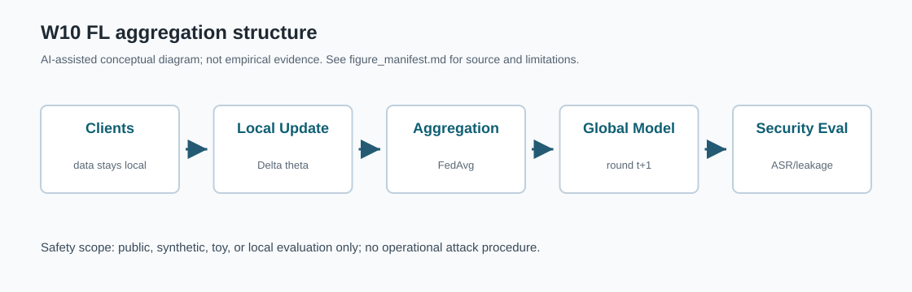
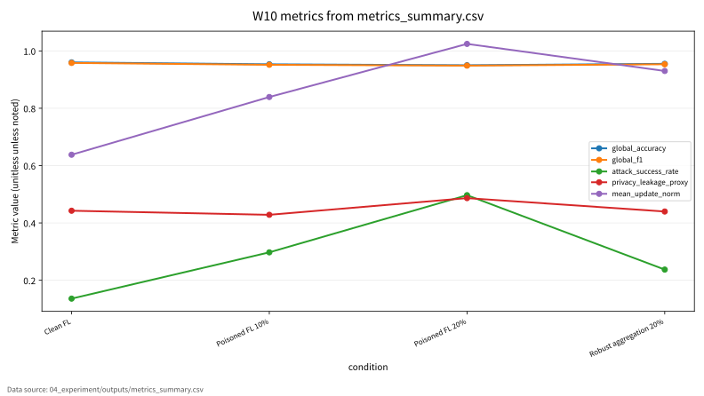

W10 Federated Learning 보안
연구 질문: Federated Learning 보안에서 성능 지표와 보안 지표를 어떻게 분리해 평가할 수 있는가?
최종 발표본: presentation_slides.html. 기존 주차번호 HTML은 호환용으로만 유지.
왜 이 주제가 중요한가
이 주제는 clean 성능만으로는 안전성을 설명하기 어렵다.
AI 원리
모델 목적함수와 표현이 평가 지표의 출발점이다.
보안 표면
공격자 가정, 보호 자산, 실패 조건을 분리한다.
근거 관리
CSV, run log, 결과표가 같은 값을 말해야 한다.
기존 발표 흐름의 빈틈
| 빈틈 | 보완 방식 | 검증 상태 |
|---|---|---|
| 수식과 지표 연결 부족 | 핵심 수식, 기호표, 보안적 의미를 한 장에 배치 | 표준식 / 확인 필요 병기 |
| 표와 위협모형 분리 | 공격자·방어자·보호 자산 표로 정리 | toy/synthetic 범위 |
| 결과 그래프 출처 불명확 | metrics_summary.csv 기반 그래프만 사용 | 데이터 출처: 04_experiment/outputs/metrics_summary.csv |
핵심 수식: FedAvg Aggregation과 Client Update
| 기호 | 의미 |
|---|---|
| \(\theta_t\) | round t의 글로벌 모델 |
| \(\mathcal{L}_k\) | client k의 local objective |
| \(n_k/n\) | client 데이터 비중 |
| \(K\) | client 수 |
Formula | 각 client는 local update를 만들고 server는 데이터 비중으로 평균한다. 악성 client update가 aggregation에 들어오면 global model과 backdoor 성능이 바뀔 수 있다. 평가 지표 연결: global_accuracy, global_f1, attack_success_rate, malicious_client_rate와 연결한다.
공격자·방어자·보호 자산
| 구성요소 | 발표 내 의미 | 주의 |
|---|---|---|
| 공격자 | 안전한 toy/public/synthetic 범위의 평가 조건을 가정 | 실제 시스템 악용 절차 없음 |
| 방어자 | 지표, 로그, 검증 절차로 위험을 관찰 | formal guarantee와 empirical proxy 구분 |
| 보호 자산 | 모델 성능, 데이터 프라이버시, 재현성 증거, 운영 신뢰 | 없는 결과는 만들지 않음 |
| 성공 조건 | global_accuracy, global_f1, attack_success_rate, privacy_leakage_proxy, mean_update_norm 변화가 위험을 설명하는지 확인 | CSV와 모순되면 보류 |
평가 프로토콜과 지표
| 평가 항목 | 대표 지표 | 기록 방식 |
|---|---|---|
| global_accuracy | CSV 컬럼 존재 시 그래프와 표에 반영 | 실제 실행 산출물 기준 |
| global_f1 | CSV 컬럼 존재 시 그래프와 표에 반영 | 실제 실행 산출물 기준 |
| attack_success_rate | CSV 컬럼 존재 시 그래프와 표에 반영 | 실제 실행 산출물 기준 |
| privacy_leakage_proxy | CSV 컬럼 존재 시 그래프와 표에 반영 | 실제 실행 산출물 기준 |
| mean_update_norm | CSV 컬럼 존재 시 그래프와 표에 반영 | 실제 실행 산출물 기준 |
Protocol | 데이터 출처: 04_experiment/outputs/metrics_summary.csv. run_log.md 또는 results.json과 모순되는 수치는 사용하지 않는다.
FL aggregation structure
data stays local
Delta theta
FedAvg
round t+1
ASR/leakage

실제 CSV 기반 지표 그래프

| condition | global_accuracy | global_f1 | attack_success_rate | privacy_leakage_proxy | mean_update_norm |
|---|---|---|---|---|---|
| Clean FL | 0.96 | 0.958 | 0.136 | 0.443 | 0.638 |
| Poisoned FL 10% | 0.953 | 0.952 | 0.297 | 0.428 | 0.839 |
| Poisoned FL 20% | 0.95 | 0.949 | 0.497 | 0.487 | 1.024 |
| Robust aggregation 20% | 0.955 | 0.953 | 0.237 | 0.44 | 0.93 |
논문 5편의 역할표
| ID | 논문 역할 | 발표에서 쓰는 위치 | 기말논문 연결 |
|---|---|---|---|
| P01 | 핵심 이론 | Background / Core Formula | Federated Learning 보안의 관련연구 뼈대 |
| P02 | 위협 분류 | Threat Model | 공격자·방어자·보호자산 정의 |
| P03 | 평가 지표 | Evaluation Protocol | 정량 지표와 로그 근거 연결 |
| P04 | 공격·방어 사례 | Security Implication | 보안적 함의와 방어 한계 |
| P05 | 재현성·정책 근거 | Limitation | 확인 필요 항목과 제출 전 검증 |
Paper map | 서지 세부사항과 DOI/URL은 최종 제출 전 원문 기준으로 확인한다.
보안적 함의
분리
clean 성능과 보안 지표를 같은 값처럼 해석하지 않는다.
추적
수치, 그래프, 노트, Q&A가 같은 산출물을 가리킨다.
제한
실제 악용 절차 없이 평가 개념과 방어 관점만 설명한다.
한계와 검증 상태
| 항목 | 상태 | 다음 확인 |
|---|---|---|
| 실험 수치 | 실행 산출물 있음 | run_log.md, results.json 대조 |
| 수식 보증 | 표준식 또는 proxy | 원문 절·쪽·formal guarantee 확인 |
| 운영 적용 | 바로 적용 불가 | 실제 데이터·정책·위험평가 필요 |
기말논문 연결
W10의 결론은 지표를 분리하고 근거 파일로 추적하는 연구 설계다.
| 기말논문 장 | 연결 내용 |
|---|---|
| 관련연구 | Federated Learning 보안의 핵심 이론과 보안 taxonomy 정리 |
| 위협모형 | FL aggregation structure 기반 공격면·방어면 정의 |
| 평가방법 | global_accuracy, global_f1, attack_success_rate, privacy_leakage_proxy, mean_update_norm를 CSV/log 기준으로 검증 |
| 한계 | toy/synthetic 범위와 확인 필요 항목을 명시 |